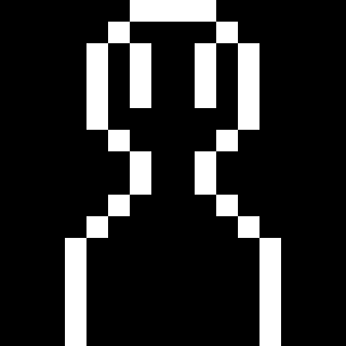
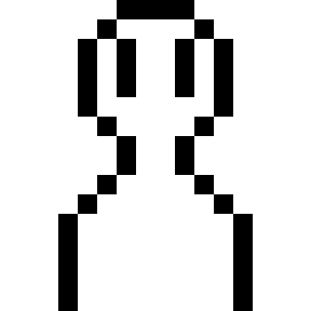

task4233の(割と)真面目な自己紹介
はじめに
詳しい自己紹介をしようと考えたときに、
チャット形式で進めてみたら面白いかなと思ったので作ってみました。
一応セクションごとで簡単なまとめをしているので、
茶番を見る気がない方は上の目次をご利用ください。
task4233についての小話

どうぞよろしく。
よろしくお願いします！
突然ですが、お名前は？
task4233って言います。
ほう。出身地はどこですか？
某所に住んでます。
なるほど。
はい。
はい。
そうですか……
高校では何の部活をしていたんですか？
パソコンを使って色々なことをする部活に入ってました。
ほう。実際に何か作ったりしましたか？
ホームページは一応作ったことがあります。
他には？
特には。
そうですか。
会話が一時中断されました。
ここで一旦情報を整理すると、
| 氏名 | task4233 |
| 出身地 | 某所 |
| 高校生の時の部活 | パソコンを使って色々なことをする部活 |
という感じですね。
では、次の話題に移りましょうか。
大学に入ってからの小話
さて、気をとりなおして次の話題に移りますね。
('ω')ｳｨｯｽ
大学ではどんなことがしたいですか？
まずは様々なことに挑戦したいですね。
その過程で自分がやりたい事をはっきりさせられれば良いなと思います。
そうですか。
では、大学ではどこにいることが多いですか？
図書館にいることが多いと思います。
それはまた何故ですか？
wi-fiが通じてる上に充電もできる密閉空間だからですかね。
なるほど。では図書館では何をしているんですか？
それはもう勉強しているに決まっているでしょう！
本当ですか？
正直に言うと、音楽聴いたりゲームしたりもしてます。
現実とはそんなものですね。
では、次はそのような好きな事について話しますかね。
それでは。
会話が一時中断されました。
改めてここで一旦情報を整理すると、
| 大学でやりたいこと | 様々なことに挑戦したい 楽しそうな事を見つけたい |
| 大学内でよくいる場所 | 図書館の個室 |
| 個室でやっていること | 音楽を聴いたり、 (一応、勉強目的で使う事もありますよ。) |
という感じですね。
では、次の話題に移りましょうか。
好きなものについての小話
では、気を取り直して。
好きなものについて聞いていきますね。
オーケーです！
まずは、好きな曲から教えてもらえますか？
一番好きな曲は、SUPER BEAVERの「らしさ」という曲です。
この曲は高校生時代に自暴自棄になっていた自分を救ってくれた曲です。
歌詞が良いので是非聞いてみてください。
歌詞が良い曲なんですね。分かりました。
では、次に最も好きな動画を教えてもらえますか？
アニメや映画などでもオーケーですよ。
アニメだと、柳広司のジョーカーゲームです。
映画だと、伊藤計劃の<harmony />ですかね。
なるほど。
他にも色々と聞きたいんですけど、
長くなってきたのでそろそろ終わりたいと思います。
Oh……
それでは。
会話が終了しました。
改めてここで一旦情報を整理すると、
| 一番好きな曲 | SUPERBEAVER |
| 一番好きなアニメ | 柳広司 |
| 一番好きな映画 | 伊藤計劃 |
という感じですね。
また、好きなものについてここで話しきれなかった事を詳しく語っているページがあるので、
もしよければ見ていってください！
最後に……
以上で、基本的な自己紹介で話す内容を話してみたつもりです。
他にも書きたい事が山ほどありますが、つまらないものなので割愛させていただきます。
このページで、
「あぁ、task4233はこういうやつなんだなぁ」
と少しでも認識して貰えば幸いです。